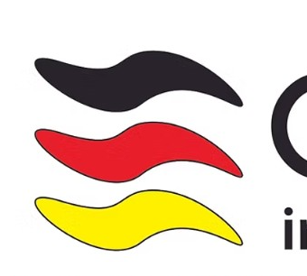

Logomark & ribbon motif

Three waves, Schwarz–Rot–Gold.
Min. height 32px. Clear-space = height of one ribbon on all sides.
Never recolor. Never stretch. Never place on active imagery.
✓ On paper, bone, pure white
✗ On red, yellow, or black fills